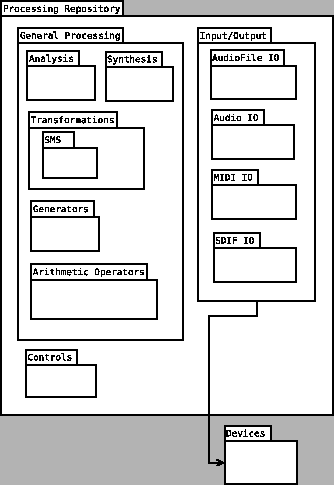

CLAM offers a set of signal processing algorithms encapsulated as
CLAM Processing classes. These Processing classes are classified in
the following general categories:
- General Processing
- Analysis
- Transformations
- SMS
- Synthesis
- Generators
- Arithmetic Operators
- Input/Output
- Audio File IO
- Audio IO
- MIDI IO
- SDIF IO
- Controls
The processing repository is illustrated in the Component UML diagram
in Figure 3.2.
Figure 3.2:
CLAM Processing Repository
|

|
Subsections
2004-10-18